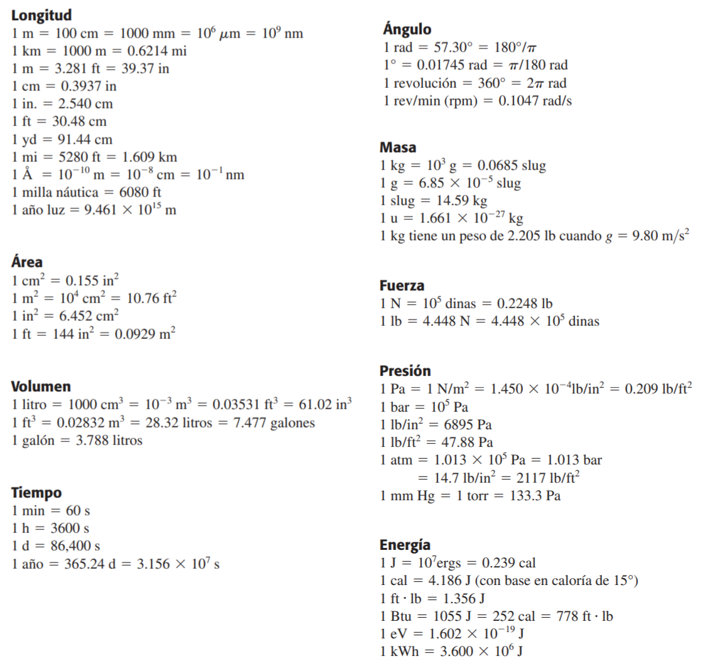

1.3 Conversión de Unidades#
La conversión de unidades permite expresar una magnitud medida en una unidad en términos de otra unidad del mismo tipo. Esto se logra mediante el uso de un factor de conversión, que es una fracción igual a 1 formada por dos cantidades equivalentes expresadas en distintas unidades.
Por ejemplo, si sabemos que:
Entonces podemos formar el siguiente factor de conversión:
Este factor se puede multiplicar por cualquier valor en kilómetros para obtener su equivalente en millas. Por ejemplo, si una distancia es de 240 km:
Este método es general y puede aplicarse a cualquier conversión de unidades siempre que se conozca la relación entre ellas.
1.3.1 Factores de conversión#
{kind=link}
1.3.2 Problemas propuestos#
Si un vehículo viaja a 90 \(\mathrm{km/h}\), ¿a cuánto equivale su velocidad expresada en metros por segundo y en millas por hora?
El diamante tallado más grande del mundo es la Primera Estrella de África. Su volumen es de 1.84 pulgadas cúbicas. ¿Cuál será su volumen en centímetros cúbicos? ¿Y en metros cúbicos?
La velocidad del sonido en el aire es 343 m/s. ¿Cuál es la velocidad de un avión supersónico que se mueve con una velocidad Mach 2? Dar la respuesta en kilómetros por hora y millas por hora. Usar la relación:
()#\[M = \frac{v}{v_s}\]Donde:
\(M\): número Mach.
\(v\): velocidad del objeto en movimiento.
\(v_s\): velocidad del sonido en el medio físico.
Un jugador de baloncesto tiene una altura de 6 ft y 10.5 in. ¿Cuál es su altura en centímetros?
Una milla cuadrada tiene 640 acres. ¿Cuántos metros cuadrados tiene un acre?
Un cilindro circular recto tiene un diámetro de 6.8 in y una altura de 2 ft. ¿Cuál es el volumen del cilindro? en:
Pies cúbicos
Metros cúbicos
Litros
Según la etiqueta de un frasco de aderezo para ensalada, el volumen del contenido es 0.473 litros (L). Use sólo las conversiones \(1 \,\rm L=1,000 \, \rm cm^3\) y \(1\, \rm in= 2.54 \, \rm cm\) para expresar dicho volumen en pulgadas cúbicas.
¿Cuántos años más viejo será usted dentro de 1 mil millones de segundos? (Suponga que un año tiene \(365\) días.)
Cierto automóvil híbrido que consume poco combustible tiene un rendimiento de gasolina de \(55.0 \, \rm mpg\) (millas por galón).
Si usted va manejando dicho auto en Europa y quiere comparar su rendimiento con el de otros automóviles europeos, exprese tal rendimiento en \(\rm km/L\).
¿Si el depósito de gasolina de este automóvil tiene una capacidad de \(45 \, \rm L\), cuántas veces deberá llenar el depósito de gasolina para conducir \(1500 \, \rm km\)?
En el otoño de 2002, un grupo de científicos de Los Alamos National Laboratory determinó que la masa crítica del neptunio 237 es de unos \(60 \, \rm kg\). La masa crítica de un material fisionable es la cantidad mínima que debe juntarse para iniciar una reacción en cadena. Este elemento tiene una densidad de \(19.5 \, \rm g/cm^3\). ¿Cuál será el radio de una esfera de este material que tiene dicha masa crítica?